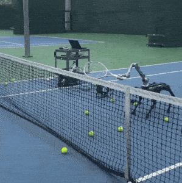
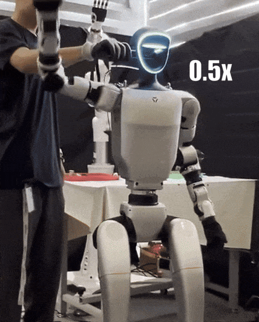
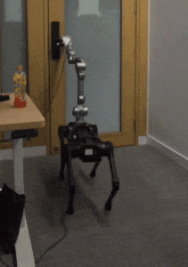
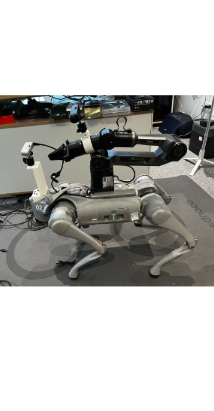

Our research lab, the Precognition Lab (智能感知与预测实验室), is interested in building human-level
Embodied AI systems that can effectively perceive, reason and interact with the real world for the good of humans.
Here is an up-to-date
research roadmap.
Our lab's computing resources include
36 RTX 3090/4090/L40 GPUs and a cluster of 24 A6000 GPUs with a 100TB NAS. See
this post.
And we have multiple mobile platforms with robot arms and dex hands:






Check out our lab's
cool publications and demos.
Our lab has over 10K followers on social media：
[
Rong's 知乎]
[
Yujin's 知乎]
[
Junwei's 知乎]
[
Junwei's 小红书]
[
Junwei's LinkedIn]
* indicates corresponding authors.
Preprint.